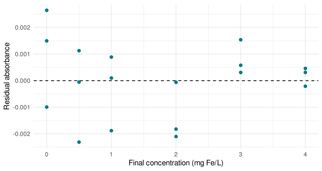

library(readr)
library(dplyr)
library(ggplot2)
standards <- read_csv("data/standards.csv", show_col_types = FALSE)
fit <- lm(absorbance ~ standard_mg_l, data = standards)
a <- unname(coef(fit)[1])
b <- unname(coef(fit)[2])
coef(fit)Calibration and quality control
Decide whether a signal can support a concentration
Interactive experiment
Explore the browser demo: Can a plausible concentration survive a curved calibration, range failure, or failed check? Predict first, change one condition, then explain the result. Export a CSV to reproduce one calculation or plot in R.
Can this response support a concentration?
A calibration relates known analyte quantities to measured responses. You will retrieve the straight-line fit from introductory computing, inspect whether its assumptions suit the data, and distinguish working range, blank response and independent checks. We reuse the iron standards later measured in the UV/visible unit: concentrations refer to mg elemental Fe/L in the final coloured solution; absorbance is already reagent-blank referenced.
Fit the response model in the measured direction

We set concentration and observe absorbance. The model is \(A=a+bc+e\), with response error \(e\). Its least-squares fit gives \(a\approx0.003874\) and \(b\approx0.198799\) L/mg Fe. The fitted offset is retained. A near-zero concentration does not force a precisely zero measured response.
Calibration standards should bracket the intended measurements. Use an independently sourced check where possible: if every standard and check comes from the same wrongly assigned stock, their agreement can conceal the problem.
Look at the residuals, not just a summary statistic
standards <- standards |>
mutate(fitted = fitted(fit), residual = residuals(fit))
ggplot(standards, aes(standard_mg_l, residual)) +
geom_hline(yintercept = 0, linetype = "dashed") +
geom_point() +
labs(x = "Final iron concentration (mg Fe/L)", y = "Residual absorbance") +
theme_minimal()
A large \(R^2\) can coexist with systematic curvature. Residuals should be assessed against concentration or fitted response, looking for curvature, changing spread or an unusual observation. Investigate records and measurement conditions before excluding a point. If response variance changes strongly with concentration, ordinary unweighted fitting may be inappropriate; recognise that limitation rather than automatically adopting a more complicated model.

In nonlinear-calibration.csv, the curve is an intentional teaching fault. One option is a justified narrower range with adequate standards; another is a validated alternative model. Deleting high standards simply to obtain a prettier line is not validation. Keep model choice and working-range evidence explicit.
Invert the line, then check its applicability
For a mean unknown absorbance, \(\hat c=(\bar A-a)/b\). This is an inverse estimate from a model of response. Reversing the regression to c ~ A is a different least-squares problem and is not the same calculation.
unknown_absorbance <- c(0.47922, 0.48041, 0.48223)
response_limits <- predict(fit,
newdata = data.frame(standard_mg_l = c(0, 4)))
in_range <- all(unknown_absorbance >= response_limits[1] &
unknown_absorbance <= response_limits[2])
unknown_mg_l <- if (in_range) (mean(unknown_absorbance) - a) / b else NA_real_
unknown_mg_lThe result is about 2.398 mg Fe/L in the final solution. It says nothing about the original sample concentration until its preparation factors are applied. Passing this range rule does not establish selectivity in a different sample matrix.
Three quality-control questions

A method blank goes through the preparation without the sample and detects introduced contamination or background. A reagent blank used as the optical reference and a whole-procedure method blank are not always the same material. An independent check challenges calibration accuracy under the check’s conditions. A sample spike probes response to added analyte in that matrix and from its point of addition onward. State preselected acceptance criteria and what happens when a check fails; do not invent a criterion after viewing results.
Detection is not reliable quantification
A weak signal can be distinguishable from blanks while still having unacceptable relative uncertainty for quantification. Detection and quantification limits depend on the procedure, noise model, decision probabilities and performance requirements. The following is only an indicative teaching calculation in a separate ideal response model with sensitivity 0.200 signal units per mg/L.
blanks <- read_csv("data/course/blank-signals.csv", show_col_types = FALSE)
s_blank <- sd(blanks$signal)
indicative <- data.frame(
blank_mean = mean(blanks$signal), blank_sd = s_blank,
detection_mg_l = 3 * s_blank / 0.200,
quantification_mg_l = 10 * s_blank / 0.200)
indicative
The blank mean is 0.0100 and SD 0.001348 signal units. The corresponding rough 3-SD and 10-SD concentration increments are 0.02023 and 0.06742 mg/L. The signal threshold includes the blank mean; these concentration increments are relative to that blank, not a second correction to the iron dataset. These multipliers are not universal validation criteria. A below-limit result is not evidence of exactly zero analyte.
Include uncertainty in inverse estimation
source("R/inverse-calibration.R")
unknown_uncertainty <- inverse_calibration(fit, unknown_absorbance)
unknown_uncertainty
write_csv(unknown_uncertainty, "output/calibration-unknown.csv")The supplied helper includes reading noise and the slope/intercept covariance in a first-order inverse calculation. It assumes a correct linear model, independent normal constant-variance response errors, negligible uncertainty in standard concentrations, and a well-determined positive slope. Its approximate 95% interval is about 2.3886–2.4077 mg Fe/L, before preparation uncertainty. A forward response prediction interval is not itself a concentration interval. NIST inverse-calibration guidance
Practical and transfer
Report the line with units, residual interpretation, unknown concentration and its conditional interval. Write decisions for (a) a sample beyond range, (b) a failed independent check, and (c) a weak response below an established quantification limit. For the curved dataset, make the residual plot and explain what additional evidence a proposed narrower range would need.
As a transfer calculation, a signal SD of 0.004 and sensitivity 0.500 give which rough 3-SD concentration increment? Would doubling the number of readings of one blank establish the whole method’s detection performance?
Check the calculation and scope
\(3(0.004)/0.500=0.024\) mg/L. Reading one blank more often does not assess between-preparation blank variation, contamination or performance in real samples. More repeat readings and more independent method blanks are different designs.
Selected Harris and Lucy reading: 5. Read by topic; the planned course edition is not yet confirmed.
Slides · Course project · R reference
Previous: Error and uncertainty · Next: Equilibrium and titration